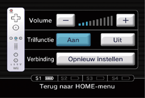

3 |
Controller-instellingen |
 |


Opmerking: als de zekering van je Wii-polsbandje een lipje heeft, druk het dan in tot het op zijn plek ‘klikt’. Hiermee voorkom je dat de zekering van het
Deze procedure zorgt ervoor dat de afstandsbediening met het systeem kan communiceren. De afstandsbediening die bij het systeem wordt geleverd, is er al mee gesynchroniseerd. Er zijn twee verschillende manieren om te synchroniseren (syncen). STANDARD MODE (vaste synchronisatie) – De vaste synchronisatie wordt gebruikt om extra ONE-TIME MODE (tijdelijke synchronisatie) – Hiermee kun je de Wii-afstandsbediening tijdelijk op een ander systeem gebruiken dan je eigen systeem of een afstandsbediening van een vriend op jouw systeem gebruiken. Hiermee wordt de vaste synchronisatie-instelling van de afstandsbediening niet overschreven. Bij dit type synchronisatie communiceert de afstandsbediening alleen met het systeem zolang het aan staat. Als het systeem wordt uitgeschakeld, wordt de synchronisatie opgeheven. Opmerking: je kunt het systeem alleen aan- of uitzetten met een Wii-afstandsbediening die met vaste synchronisatie is gesynchroniseerd met het Wii-systeem. Vaste synchronisatie Wii-afstandsbediening zitten.
Tijdelijke synchronisatie

LET OP: als de Wii-afstandsbediening zijn synchronisatie met het Wii-systeem verliest en het niet lukt de Wii-afstandsbediening opnieuw te synchroniseren, volg dan de probleemoplossing in de Wii-handleiding voor systeeminstallatie. |


 |
 |
 |